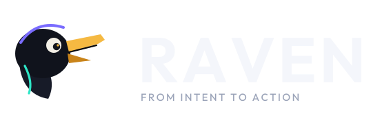
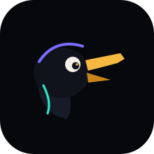
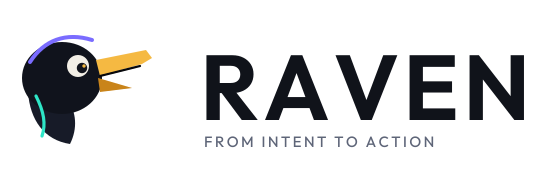

The question is what the user is trying to accomplish.

Tell software what you want.
RAVEN understands a goal, discovers what this environment can do, asks before anything consequential, and will not call the work finished until the evidence agrees.
Mark


Color
Night
#07080CInk
#10131AViolet
#7A6CFFTeal
#2EE6C7Amber
#F5B942The loop
PerceiveIntent and context
ReasonWhat is meant
PlanSteps and checks
ActThrough a capability
VerifyEvidence, then done
AdaptRetry, ask, or stop
Principles
A discovered capability is not a permission.
A call that returns is not yet a result.
Autonomy is per capability, and it stops at the boundary.
Cloud is optional extended cognition.
The trace cites what was observed.